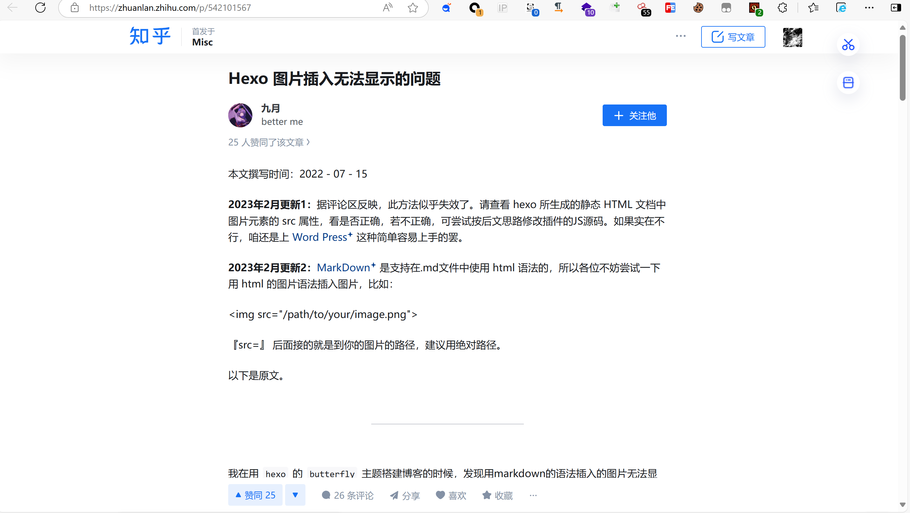
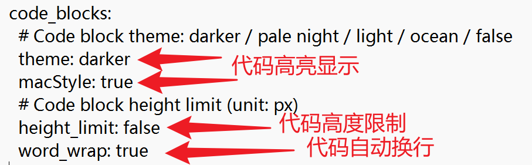
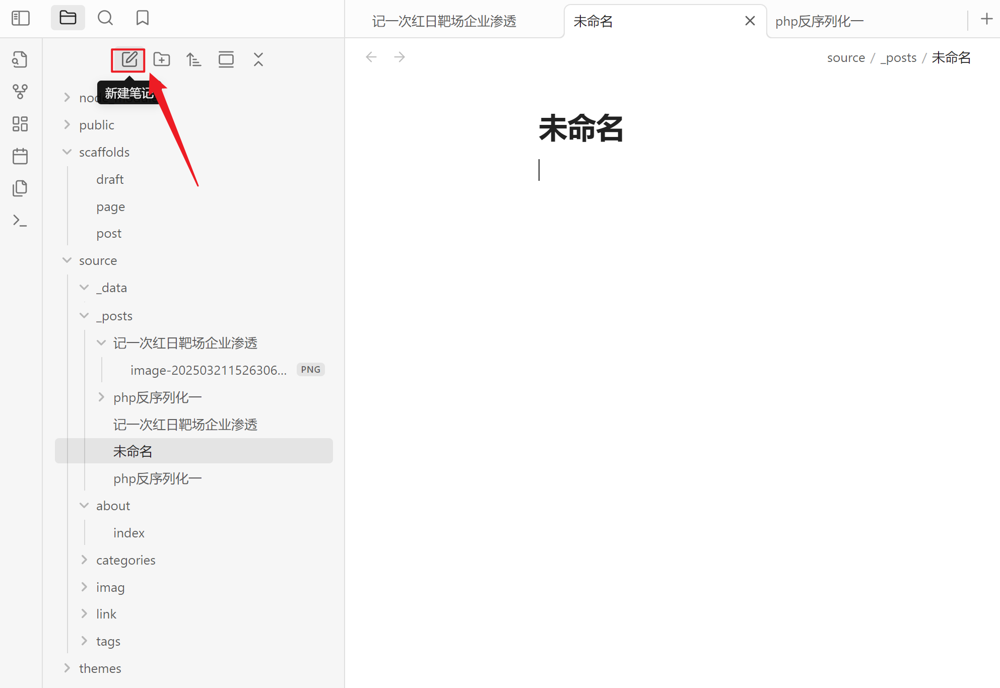
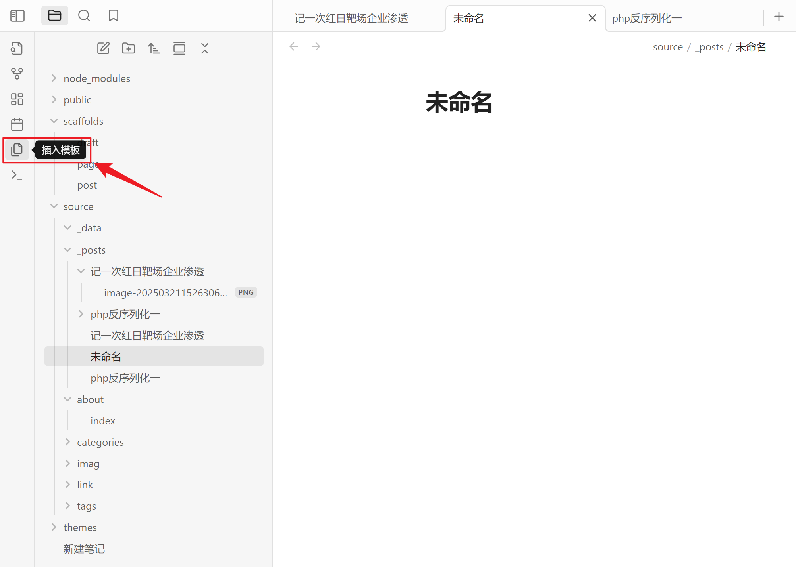
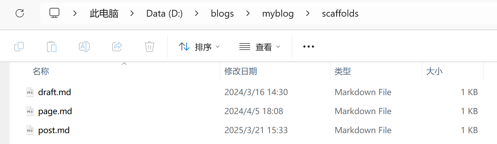
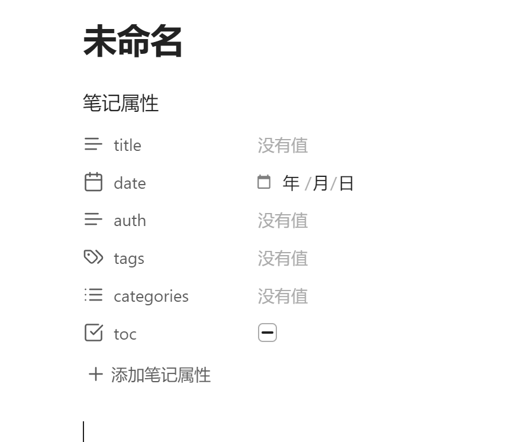
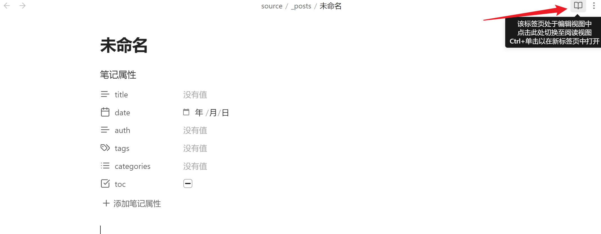
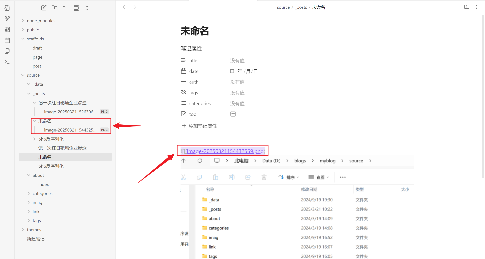
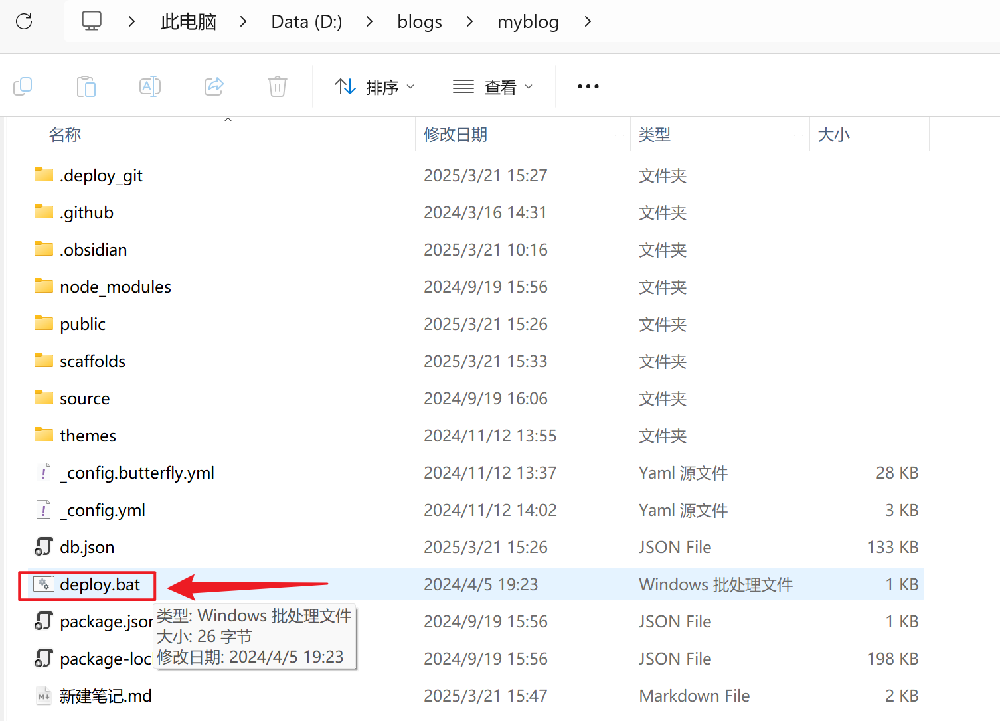

博客搭建问题与解决
问题一 图床不显示
序言
因为前期想搭个博客，遂找到了学长的博客，跟着学起来，但是因为刚开始实在看不懂
然后就创造了个雏形，想着后面再来完善一下，然后就一直卡在图床不显示的问题上，憨憨的我还想着要不每次写博客需要图片都用静态路径吧，后面实在太难受了，然后就在网上找教程
尝试
其实也就是网上到处搜跟我这个问题相关的，借鉴了baozongwi师傅的思路，但是实在不想倒腾Toypora了，于是就在网上找到了这篇文章

链接已经放在参考文章上面了，其实也就是装个插件然后改个文件的事（可恶，为什么我没有早点看到呢，浪费了老子这么多时间）
参考文章
Hexo 图片插入无法显示的问题 - 知乎
博客搭建教程 | willsafeのBlog
hexo&&hugo搭建个人博客
问题二 字体换不了
其实就是跟参考文章的一样，这里不多赘述，但是要注意 编辑主题的_config.yml中的font.css（即你新建的css文件路径）
参考文章
hexo butterfly主题下更换字体 | ZHI’S BLOG
问题三 代码块问题
修改主题配置文件_config.yml中的相关属性

参考文章
新建笔记教程
这里只是借博客记一下东西，不是小白的请路过，并且师傅们跟我新建笔记的方法也可能不一样，我这里是基于obsidian写笔记和git进行推送
1.打开obsidian，新建笔记，这里新建的笔记要与之前的笔记存在同一级目录

2.插入模板

3.选择模版

模板位置在D:\blogs\myblog\scaffolds，可自行更改

添加完模板后如图所示

4.切换视图编辑模式

5.图片格式
如果选择直接在typra文件中复制过来，要注意图片格式要为这样
1 |  |
ps:我这里用了obsidian的插件所以图片的文件名是这样子显示
并且在子文件夹保存有了图片，如图所示

6.部署
点击根目录下的deploy.bat
这里文件内容其实为：hexo clean&&hexo g&&hexo d
如果出现失败，再右键打开git重新运行查看详细信息

写在最后
网上的教程参差不齐，像笔者这种小白很容易被误导，复现了很多遍很都没成功，希望大家擦亮眼睛，如果你也遇到了跟我一样的问题，希望这篇文章能对你有些许帮助。
 wechat
wechat alipay
alipay